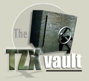

Entrevista a Steve Brown
Siguiendo con la temática que comencé con el artículo en el número anterior de esta revista sobre la creación de archivos TZX en GNU/Linux, esta entrevista ha sido hecha a Steve Brown, una persona que ha manejado miles de estos ficheros y los ha creado para tu disfrute. También es el propietario de The TZX Vault, una gran muestra de todos sus esfuerzos en la preservación de nuestras cintas y discos.
"Es vital que todos los títulos MIA/STP que son encontrados sean preservados lo antes posible." |
 |
Preséntate un poco contándonos quién eres, tus hobbies...
Mi nombre es Steve Brown, tengo 34 años y actualmente trabajo como oficial de policía en Newcastle Upon Tyne, Inglaterra. Antes de unirme a la policía, trabajé en la industria de los ordenadores durante 10 años, trabajando en sistemas de bibliotecas, paneles de detección de fuegos y juegos de carreras de coches para PS2.
Vivo en un pequño pueblo del sur de Northumberland llamado Bedlington con Tracy y nuestro perro Sam.
Mis hobbies incluyen jugar en una liga local de billar, leer biografías miilitares y políticas, correr y mantenerme en forma, coleccionar películas en DVD y también coleccionar / jugar / preservar juegos de ordenador.
¿Cúando y por qué comenzó el proyecto de TZX Vault?
El proyecto de TZX Vault comenzó el 15 de febrero de 2000 despues de que encontrara lo que era conocido como el proyecto Missing in Snaption (MIS) de Andy Barker. Después de mirar la lista, me di cuenta de que tenía algunas cintas, que en ese momento sólo existían como snapshots Z80. Las busqué y después de varias horas de esfuerzo conseguí crear ficheros TZX perfectos. Se los mandé a Andy Barker y a Martijn van der Heide y esperé...
Continué preservando cintas durante una semana o así y todavía no había obtenido respuesta de Martijn o de Andy. Me dí cuenta que probablemente estarían ambos ocupados, entonces mejor que molestarles con más envíos, decidí crear mi propia página web y subir todo allí para que pudieran acceder al material cuando tuvieran tiempo.
Gradualmente fui conociendo a otros compañeros coleccionistas y entusiastas vía eBay como Derek Glen, Paul Hurd y Tony Barnett, entre otros. Y tras persuadirles un poco, Derek, Paul y Tony comenzaron a enviar material al proyecto y fueron invitados formalmente a unirse al equipo, cosa que hicieron. El resto es historia... o algo parecido. :-)
Además de The World of Spectrum y Spanish Spectrum Archive (SPA2), The TZX Vault es una de las páginas más importantes dedicadas a la preservación de cintas, ¿pensaste alguna vez que este proyecto llegaría tan lejos?
Estoy sorprendido de que hayamos conseguido localizar tanto software original como hemos hecho durante unos 4 años. Muchos juegos fueron distribuidos en pequeñas cantidades y es gracias a un pequeño número de coleccionistas el que juegos extremadamente raros estén ahora preservados y disponibles tanto en TZX Vault como en WOS.
Además, localizar una cinta realmente es solo media parte de la batalla. Volcar la cinta no es en ningún modo una tarea fácil: hay algunos juegos MIA que han sido encontrados y que no han podido ser volcados. Es vital que todos los títulos MIA/STP que son encontrados sean preservados lo antes posible.
Las colaboraciones externas parecen muy importantes en proyectos como éste. ¿Que tipo de colaboraciones sueles tener: te envían el fichero TZX, te mandan la cinta por correo postal...?
Parece haber una mezcla de las dos. Cuando contacto con una persona que posee una cinta que no ha sido preservada, lo primero de todo le pregunto si está deseando ayudar. Habitualmente no suelen estar dispuestos, así que el siguiente paso es sugerirles modos de conseguir que el título sea preservado y permitir al propietario tomar la decision.
Si deciden que quieren intentarlo y preservar ellos mismos la cinta, les indico la dirección de diversas páginas con consejos y guías como http://tzxvault.retrogames.com/help.htm. Sin embargo es mas fácil enviar la cinta por correo postal y entonces cuando ha sido volcada, se le devuelve.
La anterior pregunta prueba lo vitales que son la colaboraciones para el equipo. Físicamente no podemos comprar todo lo que necesita ser preservado, por ello confíamos en las donaciones de dinero pero sobre todo en la generosidad de los compañeros coleccionistas y los fans del Spectrum.
Hablando de números y estadísticas, ¿cuántas cintas / discos / portadas habéis preservado hasta ahora?
Hay unas 8300 cintas, 640 discos de +3 y 210 discos de +D creados para el ZX Spectrum desde que el proyecto TZX Vault comenzó. Además hay aproximadamente 1000 cintas de C64, 130 cintas de Vic 20 y finalmente 460 imágenes CDT y 125 discos de 3" para el Amstrad. La próxima vez que se actualice la página se añadirán imágenes de C16/+4.
¿Qué tipo de software y hardware (tanto de IBM/PC como de Spectrum) usas para transferir las cintas a fortmato TZX?
Tengo un P4 a 1.4GHz corriendo Windows 98SE al que tengo conectado un viejo cassette mono a la tarjeta de sonido usando un cable de carga de Spectrum.
Uso el Cool Edit Pro para muestrear las cintas en mi PC y guardo la muestra como un fichero .voc de Soundblaster a 44KHz 8 bit mono. Después proceso la muestra con la versión más actualizada de maketzx de Ramsoft que tenga.
¿Qué características echas de menos o mejorarías de esas utilidades para facilitar la preservación de cintas?
Estoy bastante contento con la configuración que tengo. Sería bueno que las futuras actualizaciones de maketzx soportarán más esquemas de carga exóticos como los listados en: http://newton.sunderland.ac.uk/~specfreak/Schemes/schemes.html. Una versión para Win32 de Taper también sería interesante, pero estoy suficientemente contento con la versión para DOS que estoy usando actualmente.
Aparte de usar herramientas como MakeTZX o Taper, ¿has usado algún otro método para crear ficheros TZX?
Tengo un método alternativo para crear ficheros TZX, pero sólo funciona con cintas con bloques que cargan a la velocidad estándar.
El primer paso es obtener la cabecera, longitud y dirección de comienzo de cada bloque de la cinta usando el lector de cabeceras Lerm. Para los bloques sin cabecera, busco su longitud y luego creo una cabecera falsa en una cinta aparte. Usando esta información, cargo el BASIC, código o datos de la matriz en memoria, la cual puede ser entonces grabada a un disco +D.
Una vez que todos los bloques han sido grabados a +D, transfiero los ficheros a mi PC usando un programa llamado DISCIPLE, que estaba incluido en la versión registrada del Z80. Con todos los bloques en mi PC en TAP separados, entonces uso el Taper para pegar todos los bloques juntos.
Finalmente compruebo que las cabeceras y los bloques están correctos, después inserto las pausas de fin de bloque inspeccionando visualmente las pausas en el fichero .voc de Soundblaster con la muestra original usando el Cool Edit.
¿Qué aconsejarías a un novato que acaba de empezar a convertir sus propias cintas?
Para empezar, necesitas el software y el equipo correcto, mucha paciencia y un poco de conocimiento del BASIC de los ordenadores. Para afrontar las cintas complicadas, ¡el conocimiento de hexadecimal y la estructura de las cintas de Spectrum es obligado! Finalmente, si te quedas atascado, no tengas miedo en preguntar. :-)
¿Qué opinas de que algunas compañías denieguen la distribución de sus juegos de 8 bits, a pesar de que no obtengan ningún beneficio de ellos?
Creo que es bastante triste. Puedo entender que ellos quieran defender sus derechos y su propiedad intelectual, pero estoy seguro que cualquier futuro juego de Dizzy o Sabreman no se verá afectado si fuesen liberados los juegos de Ultimate o Codemasters. Pero esta es mi opinión y es su medio de vida, por tanto ¡es su decisión en ultima instancia!
¿Cuál es el esquema de carga que más dolores de cabeza te ha dado? ¿Cómo conseguiste convertirlo a fichero TZX?
En este momento hay algunos esquemas de carga que no pueden ser convertidos de ningún modo o de manera precisa. Es un proceso en progresión y una futura versión de maketzx tendrá en cuenta algunos de los esquemas de carga más exóticos. Personalmente, siempre encuentro los Speedlock 3-5 los más difícles volcar.
¿Considera que el formato TZX es el formato defintivo para la preservación de cintas? ¿Lo modificarías o mejoraría de algún modo?
De momento es bastante comprensible en lo que respecta a la preservación de software de Spectrum, pero no es un estándar "definitivo" todavía. Recientemente ha habido discusiones sobre cómo mejorar el formato y Ramsoft son actualmente los encargados, por ello tendremos una actualización una vez que sus exámenes hayan acabado. Sin embargo, la cantidad de títulos que se verían beneficiados de los cambios propuestos son pocos, por esto cualquiera sabe que cambios habrá si es que se produce alguno.
También aceptaís cintas de Amstrad, C-64 y Vic-20, ¿comparten el mismo formato TZX que el Spectrum? Si este es el caso, ¿es similar el modo de crearlos que en Spectrum? ¿Valen las mismas utlidades?
El formato TZX se usa en títulos de Amstrad, pero una vez que los ficheros son volcados tienen la extensión CDT en vez de TZX. Algunas utilidades como Taper o VOC2TZX pueden manejar tanto ficheros CDT como TZX, sin embargo, Kevin Thacker ha hecho algún trabajo con algunas herramientas de conversión específicas para Amstrad que recientemente Andy Barker ha usado bastante.
Por otro lado, las cintas de C64 y Vic 20 se preservan usando un programa llamado MTAP de Markus Brenner y un interface de cinta de C64S. Los juegos preservados son grabados usando el formato TAP de C64, que es diferente del formato TAP de Spectrum. El proceso de preservación es completamente diferente, pues se hacen 3 volcados de cada cinta y después los envío al proyecto Gamebase 64, quien limpia las imágenes usando el FinalTAP.
En este momento hay cerca de 1700 programas "desaparecidos en combate" (MIA). ¿Cuántos MIA se han encontrado desde el inicio del proyecto? ¿Crees que todos ellos podrán ser encontrados?
Hmm, esta es una difícil. La mejor persona para preguntárselo supongo que será Martijn van der Heide de WOS. Deben ser un par de miles, incluyendo recopilaciones y cintas de revistas adecuadamente preservadas, y todos los títulos previamente no listados que el equipo de preservación ha descubierto.
Esto ha sido todo, Steve, gracias por tu tiempo y ¡continúa con tu buena labor!
LINKS